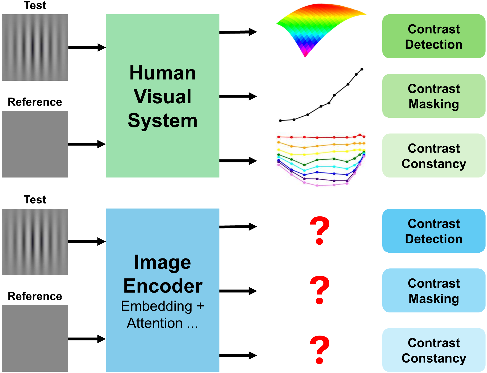
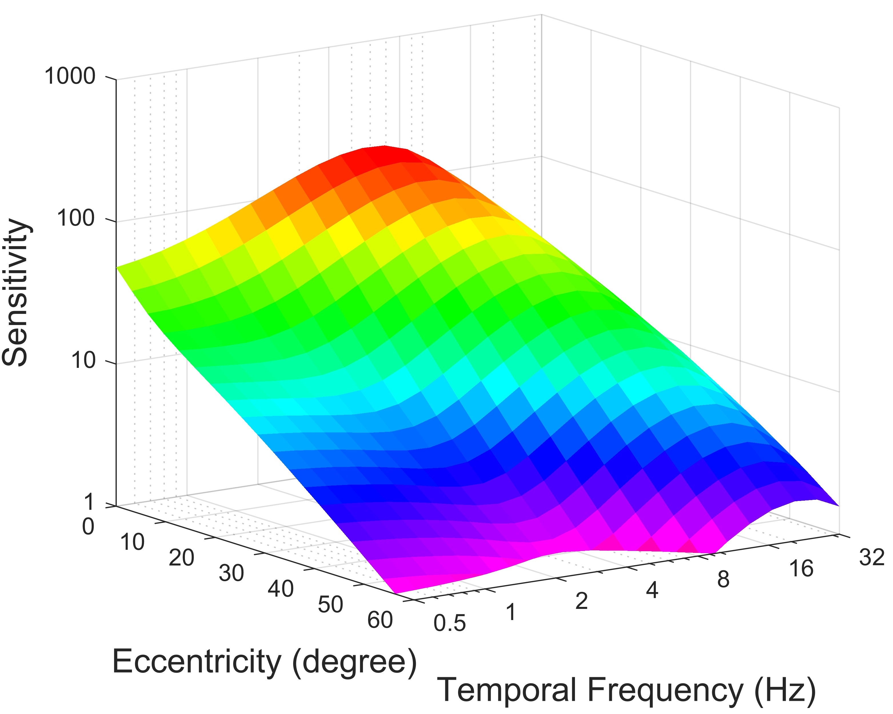
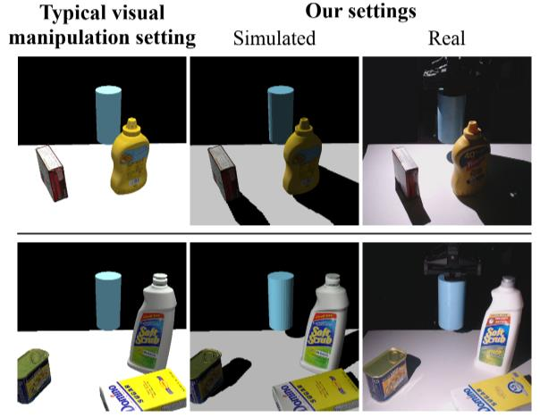
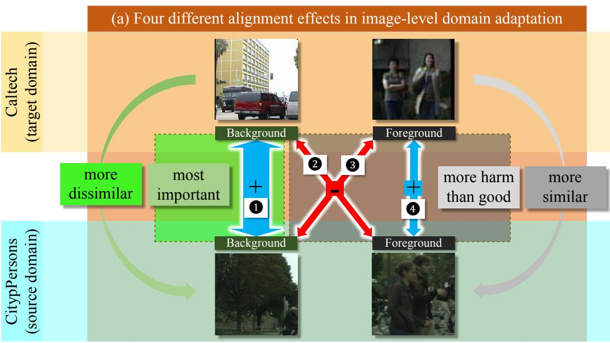
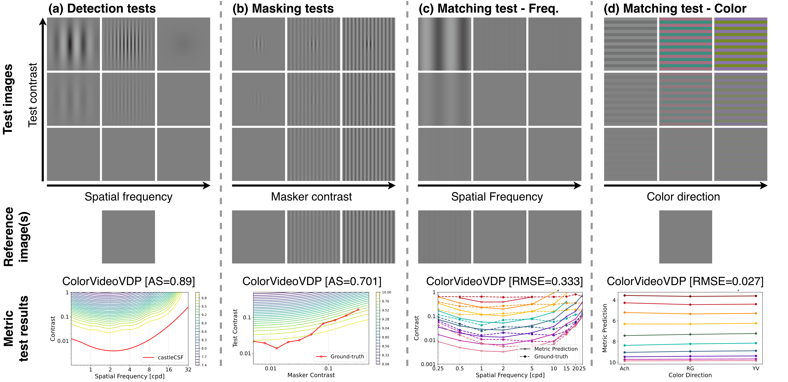
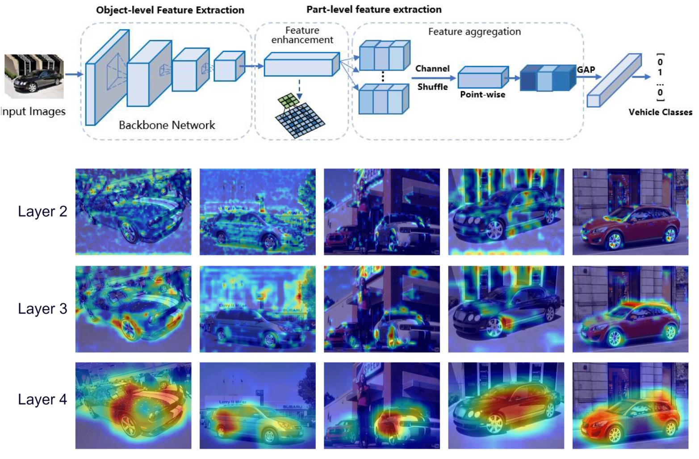

Publications
(* indicates equal contribution)


Yancheng Cai,
Robert Wanat,
Rafał K. Mantiuk
CameraVDP: Perceptual Display Assessment with Uncertainty Estimation via Camera and Visual Difference Prediction
SIGGRAPH Asia 2025, Published
[DOI] [Paper] [Arxiv] [Project]
CameraVDP: Perceptual Display Assessment with Uncertainty Estimation via Camera and Visual Difference Prediction
SIGGRAPH Asia 2025, Published
[DOI] [Paper] [Arxiv] [Project]

Yancheng Cai,
Fei Yin,
Dounia Hammou,
Rafał K. Mantiuk
Do computer vision foundation models learn the low-level characteristics of the human visual system?
CVPR 2025, Published - Highlight (Top 2% of submissions)
[Paper] [Project] [Code] [Results]
Do computer vision foundation models learn the low-level characteristics of the human visual system?
CVPR 2025, Published - Highlight (Top 2% of submissions)
[Paper] [Project] [Code] [Results]

Yancheng Cai,
Ali Bozorgian,
Maliha Ashraf,
Robert Wanat,
Rafał K. Mantiuk
elaTCSF: A Temporal Contrast Sensitivity Function for Flicker Detection and Modeling Variable Refresh Rate Flicker
SIGGRAPH Asia 2024, Published (With Strong Accept)
[Project] [Paper]
elaTCSF: A Temporal Contrast Sensitivity Function for Flicker Detection and Modeling Variable Refresh Rate Flicker
SIGGRAPH Asia 2024, Published (With Strong Accept)
[Project] [Paper]

Yancheng Cai*,
Stephen Tian*,
Hong-Xing Yu,
Sergey Zakharov,
Katherine Liu,
Adrien Gaidon,
Yunzhu Li,
Jiajun Wu
Multi-object manipulation via object-centric neural scattering functions
CVPR 2023, Published (With two Strong Accepts)
[Project] [Paper]
Multi-object manipulation via object-centric neural scattering functions
CVPR 2023, Published (With two Strong Accepts)
[Project] [Paper]

Yancheng Cai,
Bo Zhang,
Baopu Li,
Tao Chen,
Hongliang
Yan,
Jingdong Zhang,
Jiahao Xu
Rethinking Cross-Domain Pedestrian Detection: A Background-Focused Distribution Alignment Framework for Instance-free One-Stage Detectors
TIP (IEEE Transactions on Image Processing), Published
[IEEE paper] [知乎]
Rethinking Cross-Domain Pedestrian Detection: A Background-Focused Distribution Alignment Framework for Instance-free One-Stage Detectors
TIP (IEEE Transactions on Image Processing), Published
[IEEE paper] [知乎]

Dounia Hammou,
Yancheng Cai,
Pavan Chennagiri,
Christos G. Bampis,
Rafał K. Mantiuk
Evaluating quality metrics through the lenses of psychophysical measurements of low-level vision
QoMEX (International Conference on Quality of Multimedia Experience), Published - Best Student Paper Award 🏆
[arxiv]
Evaluating quality metrics through the lenses of psychophysical measurements of low-level vision
QoMEX (International Conference on Quality of Multimedia Experience), Published - Best Student Paper Award 🏆
[arxiv]
Jingdong Zhang,
Peng
Ye,
Bo Zhang,
Hancheng Ye,
Baopu Li,
Yancheng Cai,
Tao Chen
BridgeNet: Comprehensive and Effective Feature Interactions via Bridge Feature for Multi-Task Dense Predictions
TPAMI (IEEE Transactions on Pattern Analysis and Machine Intelligence), Published
[IEEE paper]
BridgeNet: Comprehensive and Effective Feature Interactions via Bridge Feature for Multi-Task Dense Predictions
TPAMI (IEEE Transactions on Pattern Analysis and Machine Intelligence), Published
[IEEE paper]

Lei Lu*,
Yancheng Cai*,
Hua Huang,
Ping Wang
An efficient fine-grained vehicle recognition method based on part-level feature optimization
Neurocomputing, Published
[paper]
An efficient fine-grained vehicle recognition method based on part-level feature optimization
Neurocomputing, Published
[paper]
Research Experience

ByteDance USA
Vidi-Gen
Research Scientist Intern (Ph.D.)
Trained the multimodal LLM Vidi-Gen for video understanding and long-form narrative script & storyboard generation, and architected a self-evaluating multi-agent video-generation system integrated with Seedance 2.0 for coherent long-form multimodal synthesis.
February 2026 - Present
Vidi-Gen
Research Scientist Intern (Ph.D.)
Trained the multimodal LLM Vidi-Gen for video understanding and long-form narrative script & storyboard generation, and architected a self-evaluating multi-agent video-generation system integrated with Seedance 2.0 for coherent long-form multimodal synthesis.
February 2026 - Present
LG Electronics USA
Computational Photography Team
Research Scientist Intern (Ph.D.)
Proposed an automated display assessment pipeline integrating calibration, artifact removal, color correction, geometric rectification, and deblurring, used to extensively evaluate mainstream OLED and mini-LED displays; contributing to the 2027 IDMS standard.
October 2025 - December 2025
Computational Photography Team
Research Scientist Intern (Ph.D.)
Proposed an automated display assessment pipeline integrating calibration, artifact removal, color correction, geometric rectification, and deblurring, used to extensively evaluate mainstream OLED and mini-LED displays; contributing to the 2027 IDMS standard.
October 2025 - December 2025
Fudan University
Embedded Deep Learning and Visual Analysis Lab
Research Assistant
Advisor: Prof. Tao Chen.
October 2020 - June 2023
Embedded Deep Learning and Visual Analysis Lab
Research Assistant
Advisor: Prof. Tao Chen.
October 2020 - June 2023